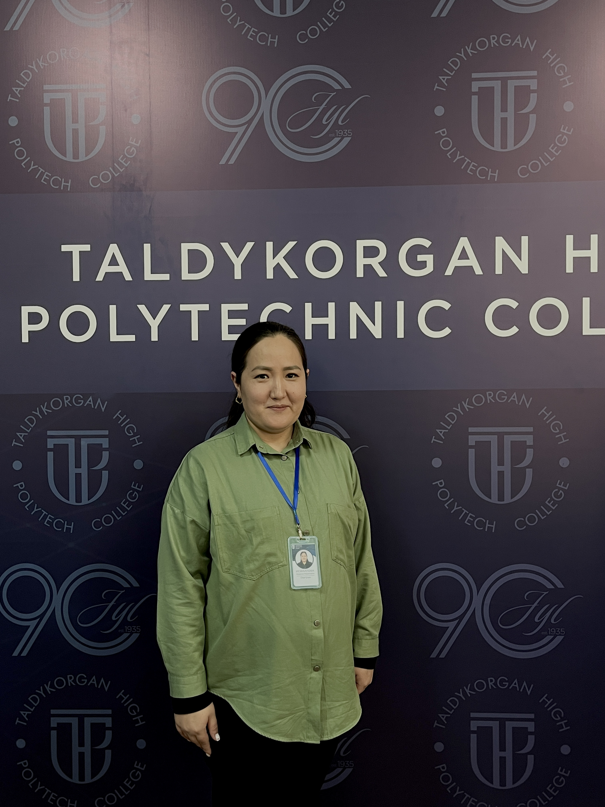

|  | Исмаилова Мадина Маратовна |
| Лауазымы | Арнайы пәндер оқытушысы |
|---|---|
| Бітірген оқу орны | ҚазҰТУ Қ.И.Сәтбаев атындағы Қазақ Ұлттық Техникалық университеті |
| Диплом бойынша білімі | Жоғары, мамандығы: Аспап жасау, 2009–2013 жж. |
| Ғылыми дәрежесі, ғылыми атағы | - |
| Біліктілігі және еңбек өтілі | Педагог, 3 жыл |
| Оқытатын модульдер |
1. Сандық техниканы монтаждау 2. Телекоммуникациялық жабдықтарға диагностика және жөндеу жұмыстарын жүргізу 3. Кабель желілерін баптау және жөндеу бойынша жұмыстар кешенін орындау |
| Байланыс ақпараты | ismailova.m91@mail.ru |
| Қосымша ақпараттар | Жетісу облысы, WorldSkills Kazakhstan, Электроника құзыреттілігі бойынша компатриот |